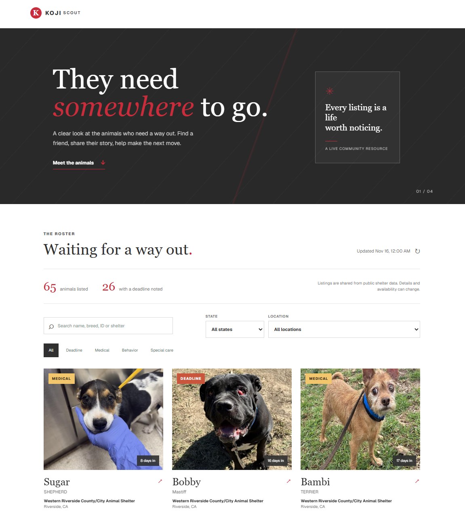
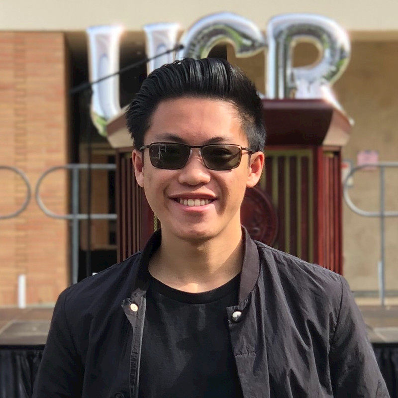
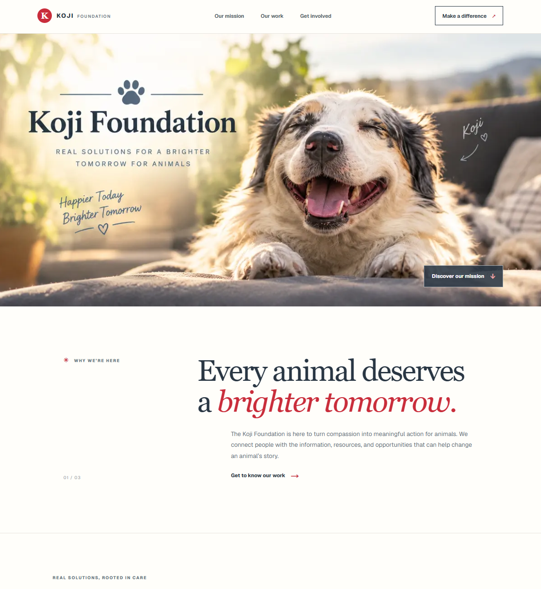
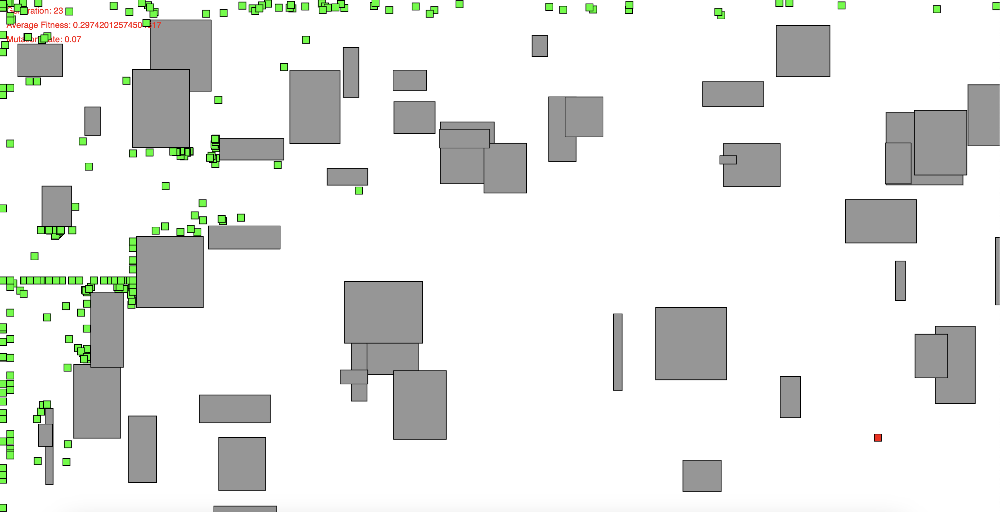
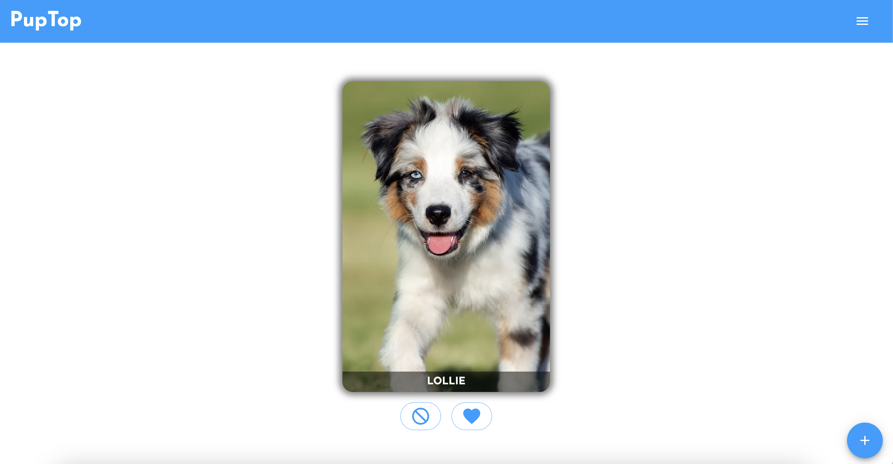
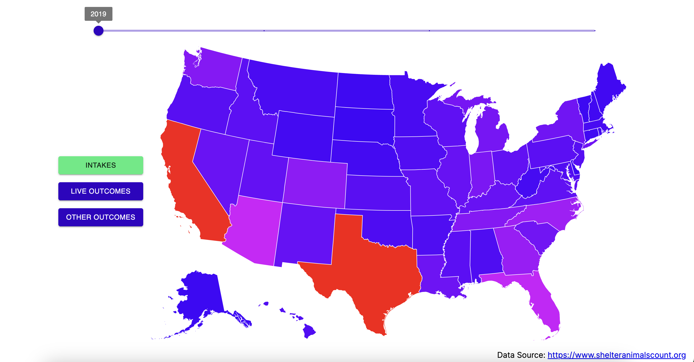
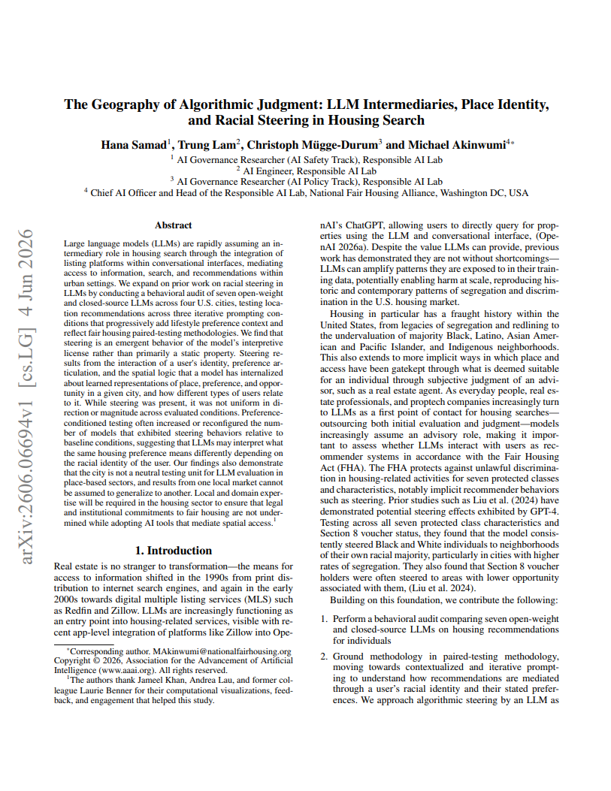
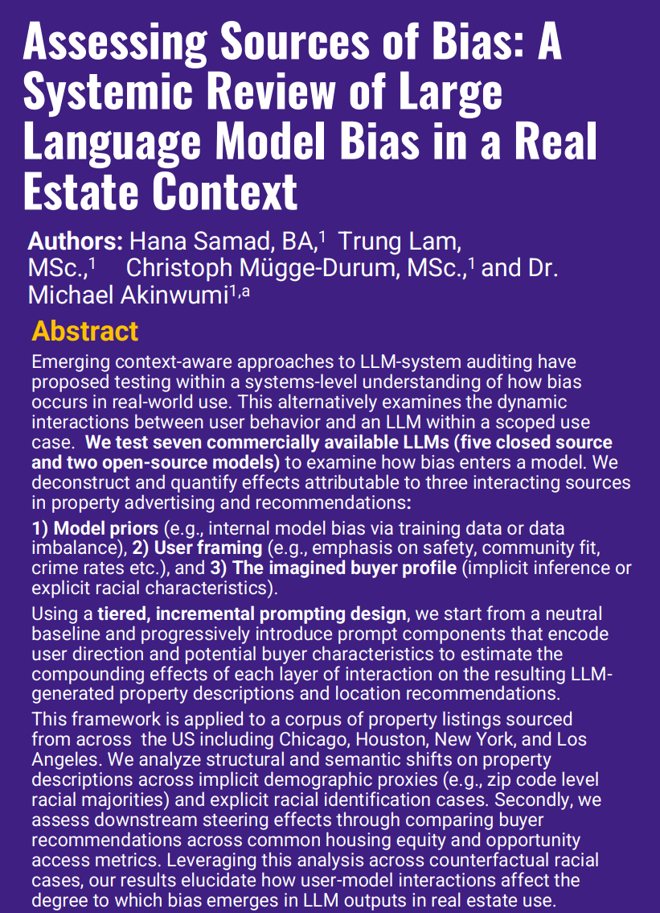

SCOUT - Koji Foundation

A shelter-discovery platform that helps surface dogs in need of rescue by aggregating listings from multiple regional sources and highlighting urgent cases with NLP and web-scraping workflows.
Visit SCOUTI build intelligent applications that connect advanced models, responsible AI practices, and real-world user experience — from research-driven prototypes to deployed products.

AI Engineer specializing in the full lifecycle of intelligent applications, from advanced model development to scalable web deployment. I hold a Master's in Computer Science from UC Riverside and specialize in creating responsible, user-facing AI solutions. My expertise spans integrating modern LLMs such as Google Gemini, implementing advanced algorithms including Genetic Algorithms and Neuroevolution, and building full-stack applications using Next.js, Convex, and data visualization tools like D3.js. My research on generative AI safety, aligned with the NIST Generative AI Challenge, underscores my commitment to high-impact, ethical AI development.

A shelter-discovery platform that helps surface dogs in need of rescue by aggregating listings from multiple regional sources and highlighting urgent cases with NLP and web-scraping workflows.
Visit SCOUT
A mission-driven animal welfare initiative focused on awareness, advocacy, and rescue visibility. The work centers on long-term impact, sanctuary-first thinking, and practical engagement.
Explore Koji Foundation
An interactive evolutionary system that evolves neural networks to find and track a target in dynamic environments. Built with Next.js and p5.js to make complex ML behavior visual and understandable.
Visit application
A modern dog-match experience with secure auth, real-time user flows, and social discovery. The stack combines Next.js, Convex, and Clerk to deliver a polished, playful product experience.
Visit application
A data-rich visualization tool exploring shelter intake and outcomes across U.S. states from 2019 to 2022, with D3-powered insights into trends, sources, and shelter patterns.
Visit application
This work audits how seven open-weight and closed-source LLMs steer housing recommendations across U.S. cities, showing that model behavior shifts with identity, preference context, and the spatial logic embedded in local place-based data and models.
Read paper
A foundational review that examines advertising bias in generated property descriptions and introduces a generalizable decomposition framework for isolating social and contextual drivers of model bias.
View posterA practical report on the challenges of detecting AI-generated housing text, highlighting accountability, transparency, and fairness concerns in high-risk AI applications.
Open report